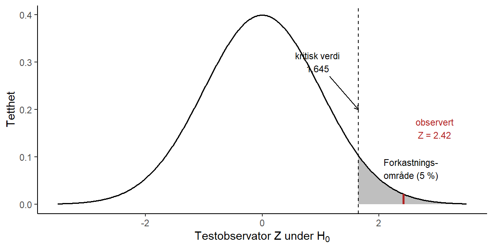

3.1 Generelt om hypotesetesting
3.1.1 Hva er en hypotesetest?
En hypotese er en påstand eller antakelse som vi ønsker å undersøke. Vitenskapsfilosofen Karl Popper påpekte at gode hypoteser må være falsifiserbare: det må finnes tenkelige observasjoner som kan motbevise dem. Et viktig poeng følger av dette: at en hypotese ennå ikke er forkastet, betyr ikke at den er sann. Newtons fysikk sto uimotsagt i århundrer før Einstein viste at den bare var tilnærmet riktig.
Statistisk hypotesetesting bygger på denne tankegangen, men gjør den presis. En statistisk hypotese er en påstand om en ukjent størrelse i en populasjon, for eksempel om at et parti har oppslutning over sperregrensen, eller om at forventningen til en variabel er en bestemt verdi \(\mu_0\). Vi setter opp to konkurrerende hypoteser:
- Nullhypotesen \(H_0\) er utgangspunktet, ofte en «kjedelig» eller skeptisk påstand om at det ikke er noen effekt eller forskjell (partiet ligger på sperregrensen, medisinen virker ikke, forventningen er lik en bestemt verdi \(\mu_0\)).
- Alternativhypotesen \(H_A\) er det vi egentlig mistenker eller ønsker å påvise (partiet ligger over sperregrensen, medisinen virker, forventningen er forskjellig fra \(\mu_0\)).
Logikken er den samme som i en rettssak: den tiltalte antas uskyldig (\(H_0\)) helt til det motsatte er bevist. Vi antar at \(H_0\) er sann, og spør så: er dataene vi observerte overraskende dersom \(H_0\) er sann? Er de tilstrekkelig overraskende, forkaster vi \(H_0\) til fordel for \(H_A\). Er de ikke det, beholder vi \(H_0\), ikke fordi vi har bevist at den er sann, men fordi vi ikke har nok bevis til å forkaste den. Akkurat som en frifinnelse ikke er det samme som å bevise uskyld, «beviser» en hypotesetest aldri nullhypotesen.
3.1.2 Framgangsmåten steg for steg
En hypotesetest kan settes opp i fem steg, og de samme fem stegene gjelder for alle statistiske hypotesetester, uansett om vi tester en forventning, en andel, en forskjell mellom to grupper eller noe annet. De konkrete regnestykkene i steg 4 og 5 varierer fra test til test, men framgangsmåten er den samme. Vi følger stegene med et konkret eksempel: har partiet Venstre oppslutning over sperregrensen på 4 %?
- Formuler spørsmålet. Hva vil vi finne ut? Her: ligger den sanne oppslutningen \(p\) over 4 %?
- Sett opp hypotesene og velg signifikansnivå. Vi skriver spørsmålet som to hypoteser om populasjonsstørrelsen, og bestemmer på forhånd hvor sterkt beviset må være for at vi skal forkaste \(H_0\). Dette er signifikansnivået \(\alpha\), og valget er ingen ren formalitet: vi må veie hvor alvorlig det er å forkaste en sann \(H_0\) (en Type I-feil) mot at et for strengt nivå gjør det vanskeligere å fange opp en effekt som faktisk finnes. Vi ser nærmere på denne avveiningen i neste avsnitt. Her velger vi det vanlige nivået \(\alpha = 5\,\%\), og setter opp \(H_0: p = 0.04\) mot \(H_A: p > 0.04\).
- Samle data. Vi trekker et utvalg fra populasjonen. Vi spør 1000 tilfeldig valgte velgere, og 55 av dem sier de vil stemme partiet, altså en observert oppslutning på \(\widehat{p} = 55/1000 = 0.055\).
- Beregn testobservatoren. Vi oppsummerer dataene i én tallstørrelse, en testobservator, som tallfester hvor mye beviset taler mot \(H_0\). For en andel er den (vi kommer tilbake til formelen i neste delkapittel) \[Z = \frac{\widehat{p} - p_0}{\sqrt{p_0(1-p_0)/n}} = \frac{0.055 - 0.04}{\sqrt{0.04 \cdot 0.96/1000}} \approx 2.42.\] Legg merke til hvordan testobservatoren måler avviket mellom dataene og nullhypotesen. Telleren \(\widehat{p} - p_0\) er den rene differansen mellom det dataene sier (\(\widehat{p} = 0.055\)) og det nullhypotesen påstår (\(p_0 = 0.04\)). En slik differanse er vanskelig å tolke alene: er et avvik på 0.015 mye eller lite? Det avhenger av hvor mye \(\widehat{p}\) varierer fra utvalg til utvalg. Nevneren \(\sqrt{p_0(1-p_0)/n}\) er nettopp denne variasjonen, standardfeilen til \(\widehat{p}\) når \(H_0\) er sann. Ved å dele teller på nevner bytter vi enhet: avviket måles ikke lenger i andeler, men i antall standardfeil. At \(Z = 2.42\) betyr altså at den observerte andelen ligger 2.42 standardfeil over det nullhypotesen tilsier. Poenget med en testobservator er nettopp at vi kjenner fordelingen dens når \(H_0\) er sann, her standardnormalfordelingen, slik at vi kan avgjøre hvor overraskende en verdi som 2.42 er.
- Vurder signifikans og konkluder. Vi spør hvor overraskende testobservatoren er dersom \(H_0\) er sann. En verdi på 2.42 eller større har bare sannsynlighet omtrent 0.008 under standardnormalfordelingen. Det er mindre enn signifikansnivået på 5 %, så vi er tilstrekkelig overrasket: vi forkaster \(H_0\) og konkluderer med at partiet ser ut til å ligge over sperregrensen.
Steg 5 er kjernen, og «overrasket» har en presis betydning: er \(H_0\) sann, følger testobservatoren en kjent fordeling (en samplingfordeling), og vi kan regne ut hvor sannsynlig det er å få en verdi som er minst så ekstrem som den vi observerte. Er den sannsynligheten liten, betyr det nettopp at vi er overrasket: dataene er da vanskelige å forene med \(H_0\).
Det finnes to likeverdige måter å ta beslutningen i steg 5 på, og de gir alltid samme konklusjon. Begge tar utgangspunkt i fordelingen til testobservatoren under \(H_0\), som i Venstre-eksempelet er standardnormalfordelingen.
Forkastningsområdet er de verdiene av testobservatoren som skal få oss til å forkaste. Det velges direkte ut fra fordelingen og signifikansnivået: vi legger det i den halen (eller de halene) av fordelingen som svarer til \(H_A\), og gjør det akkurat stort nok til at sannsynligheten for å havne der er \(\alpha\) når \(H_0\) er sann. Grensen kalles den kritiske verdien. I Venstre-eksempelet er \(H_A\) ensidig (\(p > p_0\)), så hele forkastningsområdet ligger i høyre hale, og den kritiske verdien er 95-prosentilen i standardnormalfordelingen, \(z_{0.95} = 1.645\). Vi forkaster dersom \(Z > 1.645\), og siden den observerte verdien \(Z = 2.42\) ligger godt innenfor, forkaster vi (Figur 3.1).
p-verdien snur på det: i stedet for en fast grense regner vi ut hvor sannsynlig en testobservator minst så ekstrem som den observerte er under \(H_0\). Det er arealet til høyre for \(Z = 2.42\) i figuren, altså omtrent 0.008. Vi forkaster dersom p-verdien er mindre enn \(\alpha\). De to metodene er to sider av samme sak: den observerte verdien ligger i forkastningsområdet nettopp når p-verdien er mindre enn \(\alpha\).
## Warning in geom_segment(aes(x = zobs, xend = zobs, y = 0, yend = dnorm(zobs)), : All aesthetics have length 1, but the data has 500 rows.
## ℹ Please consider using `annotate()` or provide this layer with data containing
## a single row.
Figur 3.1: Fordelingen til testobservatoren under \(H_0\) (standardnormalfordelingen) i Venstre-eksempelet. Forkastningsområdet på 5 % er skyggelagt, med den kritiske verdien 1.645 som grense. Den observerte testobservatoren \(Z = 2.42\) faller innenfor forkastningsområdet, så vi forkaster.
3.1.3 Signifikansnivå og de to feiltypene
Hvor overrasket må vi være før vi forkaster? Her må vi ta stilling til at en test kan gå galt på to måter:
| Vår avgjørelse | \(H_0\) er sann | \(H_0\) er usann |
|---|---|---|
| Forkaster \(H_0\) | Type I-feil | Riktig |
| Beholder \(H_0\) | Riktig | Type II-feil |
En Type I-feil er å forkaste en sann nullhypotese (dømme en uskyldig). En Type II-feil er å beholde en usann nullhypotese (frikjenne en skyldig).
Signifikansnivået \(\alpha\) er sannsynligheten vi på forhånd er villige til å godta for å gjøre en Type I-feil: \(\alpha = P(\text{forkaste } H_0 \mid H_0 \text{ er sann})\). Vi velger \(\alpha\) før vi ser dataene (typisk 5 %), og det er \(\alpha\) som bestemmer hvor grensen for forkastningsområdet går. Et 5 %-nivå betyr at vi legger forkastningsområdet der de 5 % mest ekstreme verdiene under \(H_0\) ligger. Hvor lavt vi bør sette \(\alpha\), avhenger av hvor alvorlig en Type I-feil er i den konkrete situasjonen: jo mer det koster å forkaste en sann nullhypotese, jo strengere (lavere) \(\alpha\) bør vi kreve.
Sannsynligheten for en Type II-feil kaller vi \(\beta\). Styrken (power) til testen er \(1 - \beta\), altså sannsynligheten for at vi korrekt forkaster en usann nullhypotese. En sterk test er god til å oppdage en effekt når den faktisk finnes.
De to feiltypene trekker i hver sin retning: krymper vi forkastningsområdet (lavere \(\alpha\)), gjør vi Type I-feil sjeldnere, men Type II-feil oftere. Den eneste måten å redusere begge samtidig på er å samle inn mer data: en større \(n\) gir en mer presis testobservator, og dermed både lav \(\alpha\) og høy styrke.
3.1.4 p-verdien
p-verdien er sannsynligheten for å observere en testobservator som er minst så ekstrem som den vi faktisk fikk, gitt at \(H_0\) er sann. En liten p-verdi betyr at dataene er svært overraskende under \(H_0\), og teller som bevis mot \(H_0\). Beslutningsregelen er enkel: vi forkaster \(H_0\) dersom \(p \leq \alpha\).
I Venstre-eksempelet over ga testobservatoren en p-verdi på omtrent 0.008. Siden den er mindre enn signifikansnivået vi valgte (\(\alpha = 0.05\)), forkaster vi \(H_0\), og konkluderer med at resultatet tyder på oppslutning over sperregrensen.
p-verdien er lett å mistolke, så merk deg hva den ikke er:
- Den er ikke sannsynligheten for at \(H_0\) er sann. p-verdien sier noe om dataene gitt \(H_0\), ikke om \(H_0\) gitt dataene.
- En stor p-verdi beviser ikke at \(H_0\) er sann; den betyr bare at dataene er forenlige med \(H_0\).
- «Statistisk signifikant» (\(p \leq \alpha\)) er ikke det samme som «viktig». Med et stort nok utvalg kan selv en ubetydelig forskjell bli statistisk signifikant.
3.1.5 Ensidige og tosidige tester
Uansett hvilken størrelse vi tester, kan alternativhypotesen peke i én eller begge retninger. La \(\theta\) stå for parameteren vi tester (en forventning, en andel, en differanse mellom to grupper, og så videre), og \(\theta_0\) for verdien nullhypotesen påstår:
- I en tosidig test er \(H_A: \theta \neq \theta_0\). Vi bryr oss om avvik i begge retninger, og forkastningsområdet legges i begge haler av fordelingen til testobservatoren.
- I en ensidig test er \(H_A: \theta > \theta_0\) (eller \(\theta < \theta_0\)), og hele forkastningsområdet legges i én hale. Venstre-eksempelet er ensidig: der er parameteren oppslutningen \(p\), og vi er bare interessert i om den er over sperregrensen.
Vi velger en ensidig test når bare avvik til den ene siden er beslutningsrelevant, eller når vi på forhånd kan utelukke den andre siden. Ellers bruker vi en tosidig test. Valget må tas før vi ser dataene, ikke etterpå for å presse fram det svaret vi ønsker oss.
3.1.6 Fallgruver ved hypotesetesting
Hypotesetesting er et kraftig verktøy, men også lett å misbruke. Tre fallgruver er verdt å kjenne til:
- Feiltolkning av p-verdien. Se listen over. Den amerikanske statistikkforeningen (ASA) har til og med gitt ut en egen uttalelse om hvor ofte p-verdien misforstås.
- Multippel testing. Tester vi mange hypoteser samtidig, vil noen «bli signifikante» ved ren tilfeldighet. Tester du 20 helt uvirksomme effekter på 5 %-nivå, forventer du å få omtrent ett «signifikant» funn bare av flaks. Veien fra multippel testing til (bevisst eller ubevisst) juks er kort, og et signifikant funn som er plukket ut i etterkant blant mange tester, er lite verdt.
- Forutsetningene. Testene hviler på antakelser (uavhengige observasjoner, en bestemt fordeling, stor nok \(n\)). Ofte er samplingfordelingen bare en tilnærming som støtter seg på sentralgrenseteoremet. Konklusjonen er ikke bedre enn forutsetningene den bygger på.
3.1.7 Kontrollspørsmål
Når du har vært gjennom stoffet, bør du kunne svare på følgende:
- Hva vil det si å gjennomføre en hypotesetest, og hvorfor kan vi aldri «bevise» nullhypotesen?
- Hva er forskjellen på en Type I-feil og en Type II-feil?
- Hva er signifikansnivået \(\alpha\), og hva har det med forkastningsområdet å gjøre?
- Hva er styrken til en test, og hvordan tolker du den?
- Hva er p-verdien, og hva er den ikke?
- Når bruker vi en ensidig test, og når en tosidig?
- Nevn minst én fallgruve ved hypotesetesting.